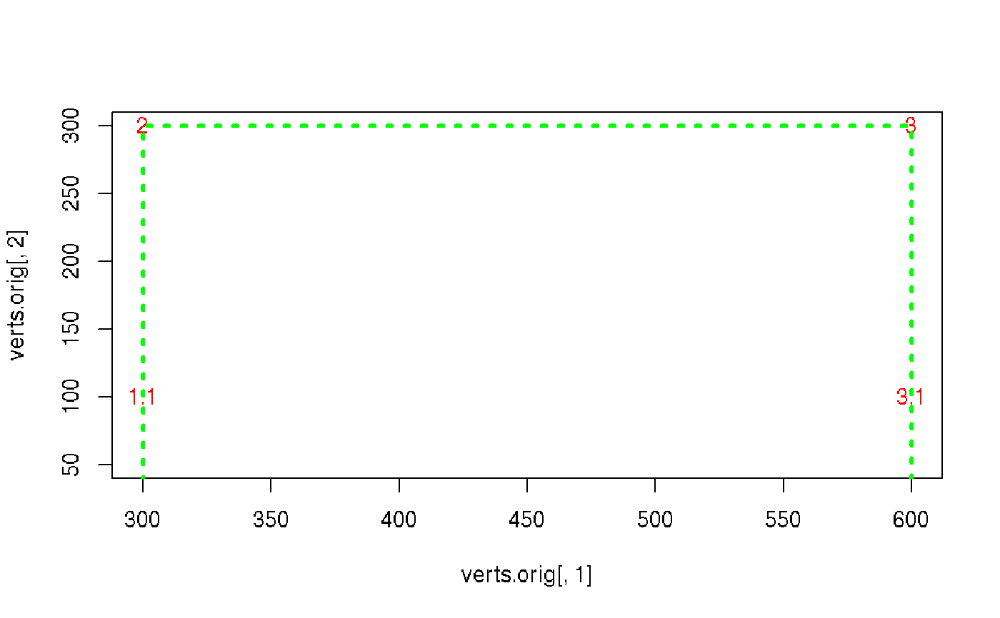

R/read.gatingML.cytobank.R
extend.RdIt is equivalent to the behavior of shifting the off-scale boundary events into the gate boundary that is describled in bounding transformation section of gatingML standard.
extend( gate, bound, data.range = NULL, plot = FALSE, limits = c("original", "extended") ) # S3 method for polygonGate extend( gate, bound, data.range = NULL, plot = FALSE, limits = c("original", "extended") ) # S3 method for rectangleGate extend(gate, ...) # S3 method for ellipsoidGate extend(gate, ...)
| gate | a flowCore filter/gate |
|---|---|
| bound | numeric matrix representing the bouding information parsed from gatingML. Each row corresponds to a channel. rownames should be the channel names. colnames should be c("min", "max") |
| data.range | numeric matrix specifying the data limits of each channel. It is used to set the extended value of vertices and must has the same structure as 'bound'. when it is not supplied, c(-.Machine$integer.max, - .Machine$integer.max) is used. |
| plot | whether to plot the extended polygon. |
| limits | character whether to plot in "extended" or "original" gate limits. Default is "original". |
| ... | other arguments |
a flowCore filter/gate
The advantage of extending gates instead of shifting data are two folds: 1. Avoid the extra computation each time applying or plotting the gates 2. Avoid changing the data distribution caused by adding the gates
Normally this function is not used directly by user but invoked when parsing GatingML file exported from Cytobank.
library(flowCore) sqrcut <- matrix(c(300,300,600,600,50,300,300,50),ncol=2,nrow=4) colnames(sqrcut) <- c("FSC-H","SSC-H") pg <- polygonGate(filterId="nonDebris", sqrcut) pg#> Polygonal gate 'nonDebris' with 4 vertices in dimensions FSC-H and SSC-Hbound <- matrix(c(100,3e3,100,3e3), byrow = TRUE, nrow = 2, dimnames = list(c("FSC-H", "SSC-H"), c("min", "max"))) bound#> min max #> FSC-H 100 3000 #> SSC-H 100 3000pg.extened <- extend(pg, bound, plot = TRUE)